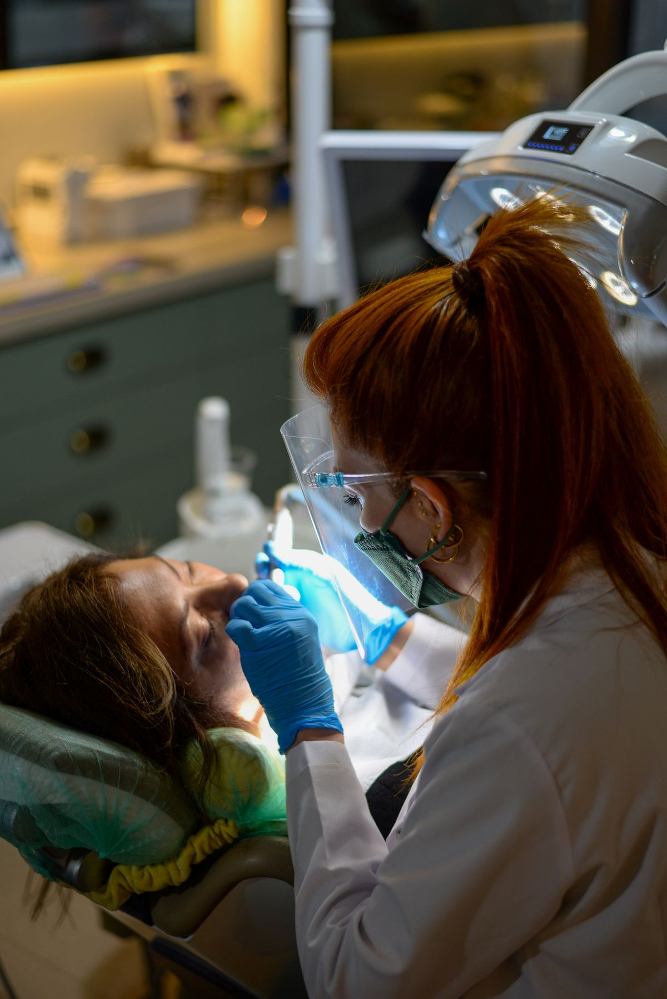
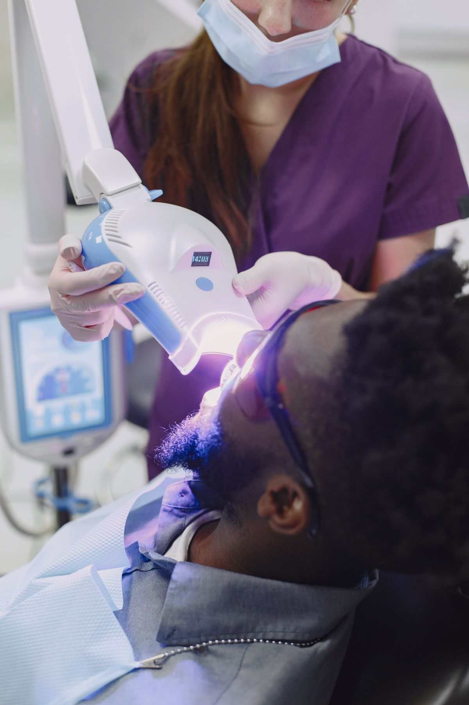
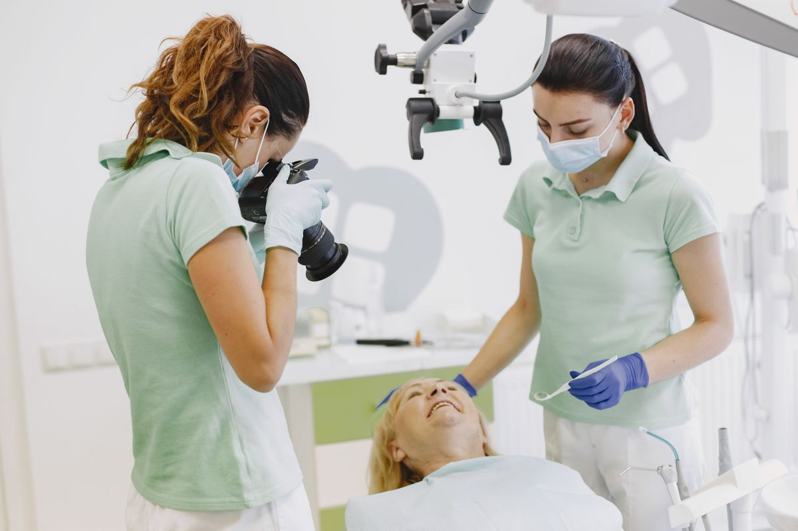
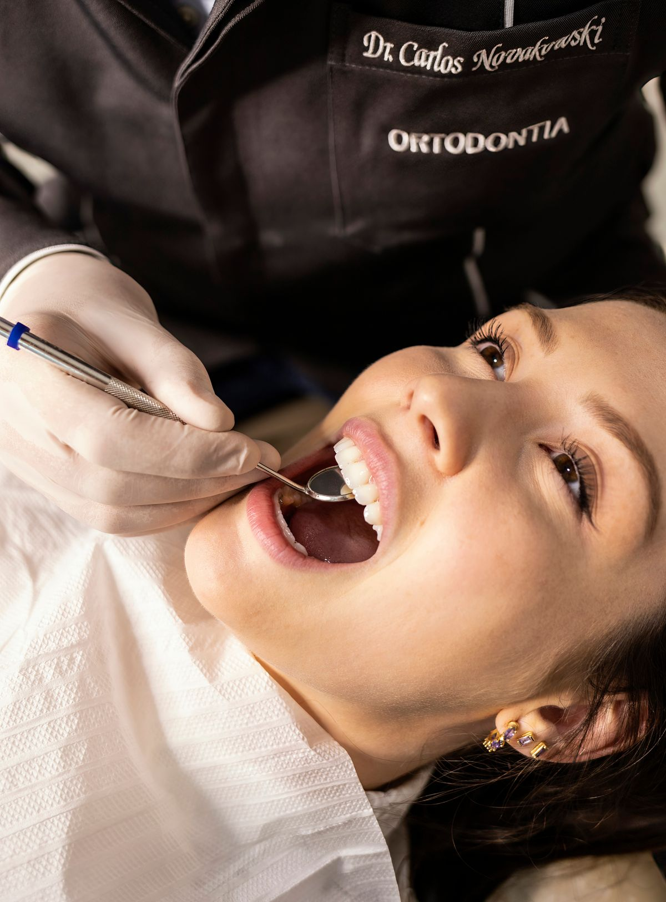
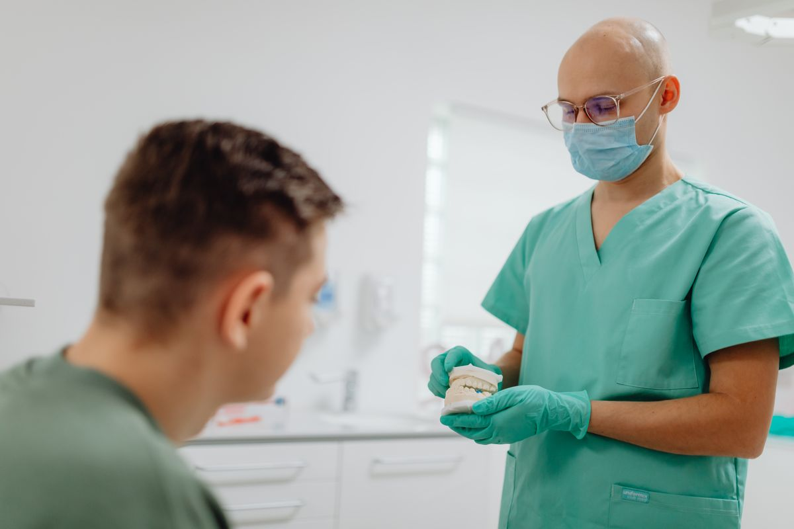
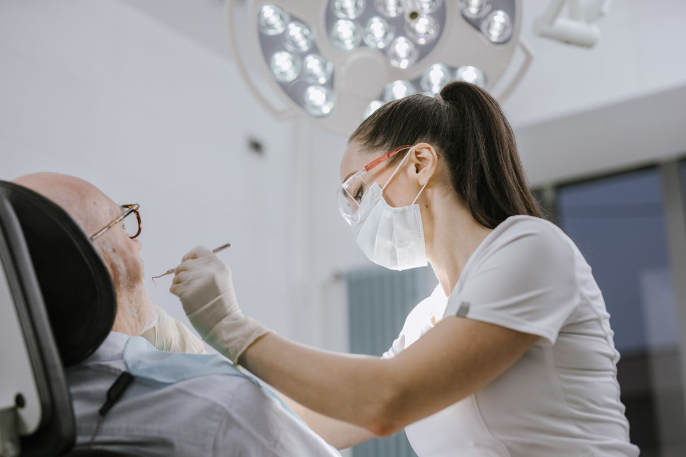
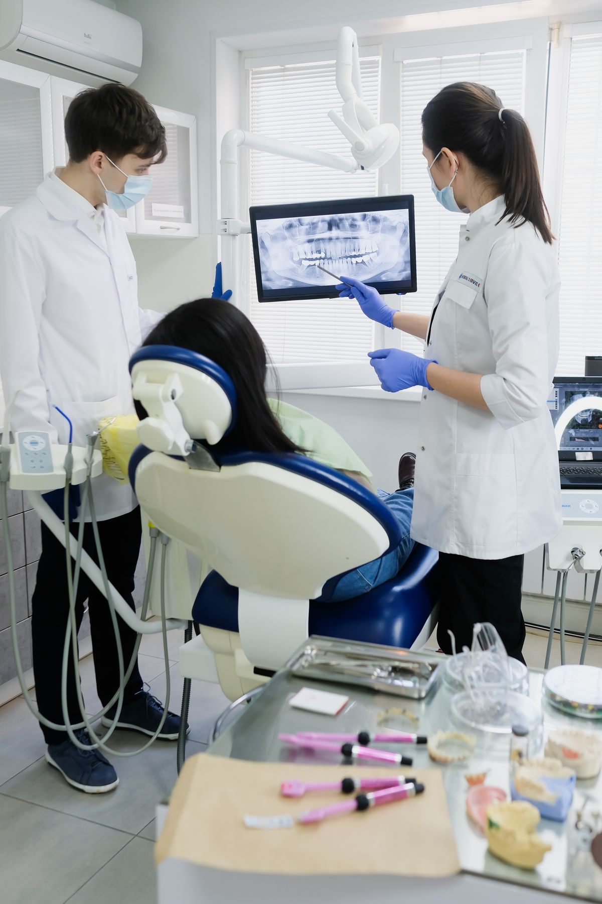
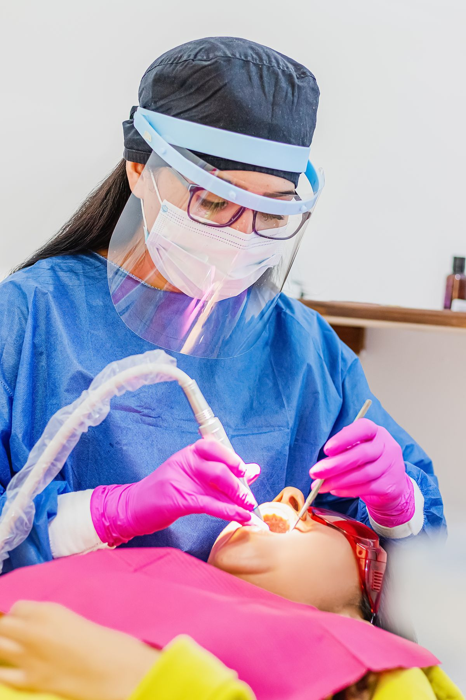
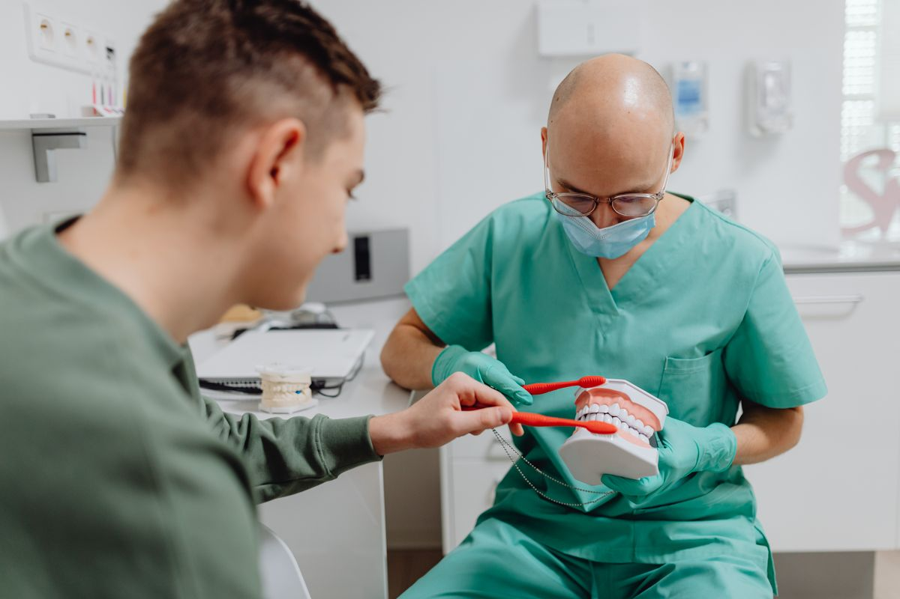
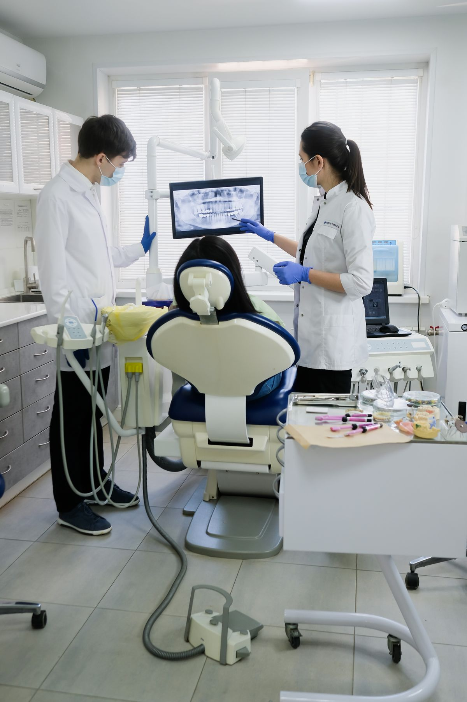

درمان ریشه (عصبکشی)
درمان دقیق کانالهای ریشه برای از بین بردن عفونت و درد، و حفظ دندان طبیعی شما تا جای ممکن.
دکتر دینا دیوبند، جراح و دندانپزشک، در استودیوی شخصی خود در ظفر تهران درمانهای ریشه، ترمیمی و زیبایی را انجام میدهد؛ از جمله درمان با آرامبخشی برای بیمارانی که از دندانپزشکی اضطراب دارند.

از نجات دندان با درمان ریشه تا بازسازی کامل لبخند با لمینیت و روکش سرامیکی.

درمان دقیق کانالهای ریشه برای از بین بردن عفونت و درد، و حفظ دندان طبیعی شما تا جای ممکن.

پوستههای ظریف سرامیکی برای اصلاح فرم، رنگ و فاصله دندانها و ساختن لبخندی یکدست و طبیعی.

روکشهای سرامیکی E-max برای دندانهای ضعیف یا درمانریشهشده؛ محافظت کامل با ظاهری شبیه دندان طبیعی.

برداشتن پوسیدگی و ترمیم دندان با مواد همرنگ، تا دندان هم سالم بماند و هم ظاهر طبیعیاش را حفظ کند.

اگر از دندانپزشکی میترسید، درمانهای لازم میتواند با آرامبخشی و در فضایی آرام انجام شود؛ بدون اضطراب و خاطره بد.

ترکیب درمانهای درمانی و زیبایی در یک طرح واحد؛ اول سلامت دندانها، بعد زیبایی لبخند، متناسب با چهره شما.

در یک استودیوی شخصی، درمان شما از معاینه تا پایان کار زیر نظر مستقیم خود پزشک انجام میشود و برای هر بیمار، وقت جداگانه و بدون عجله در نظر گرفته میشود.
دکتر دینا دیوبند با مدرک دکترای جراحی دندانپزشکی (DDS)، درمانهای جراحی، ریشه و زیبایی را شخصاً انجام میدهد.
عصبکشی، ترمیم و بازسازی لبخند با لمینیت و روکش سرامیکی E-max، محور اصلی کار استودیو است.
برای بیمارانی که اضطراب دندانپزشکی دارند، درمانها میتواند با آرامبخشی انجام شود تا تجربهای آرام داشته باشند.
استودیو در خیابان شریعتی، حدفاصل میرداماد و ظفر قرار دارد؛ برای رزرو کافی است در واتساپ پیام بدهید.
دقت در هر مرحله؛ از معاینه و عکس رادیوگرافی تا اجرای نهایی درمان.





در واتساپ نوبت میگیرید؛ در جلسه اول، دندانها معاینه و در صورت نیاز عکس رادیوگرافی بررسی میشود.
مراحل درمان، تعداد جلسات و گزینههای پیش رو به زبان ساده برایتان توضیح داده میشود تا با آگاهی تصمیم بگیرید.
درمان طبق طرح انجام میشود؛ در صورت نیاز و تمایل شما، با آرامبخشی تا تجربهای آرام و بدون استرس داشته باشید.
بعد از درمان، نکات مراقبتی گفته میشود و برای کنترل نتیجه، در کنار شما هستیم.
سادهترین راه، ارسال پیام در واتساپ به شماره ۰۹۳۳۷۶۹۹۳۹۴ است. همچنین میتوانید با شماره ثابت استودیو ۰۲۱۲۶۴۰۷۳۲۶ تماس بگیرید.
بسته به دندان و میزان عفونت، درمان ریشه معمولاً در یک تا دو جلسه انجام میشود. در جلسه معاینه، بعد از بررسی دندان و عکس رادیوگرافی، تعداد جلسات دقیق به شما گفته میشود.
آرامبخشی برای بیمارانی که از درمان دندانپزشکی اضطراب یا ترس دارند، یا درمان طولانی در پیش دارند، گزینه مناسبی است. مناسب بودن آن برای شما در جلسه معاینه و با توجه به شرایطتان مشخص میشود.
تهران، ظفر، خیابان شریعتی (حدفاصل میرداماد و ظفر)، کوچه دفتری شرقی، پلاک ۸، طبقه ۴، واحد ۷. لینک لوکیشن در پایین صفحه هم قرار دارد.
برای رزرو نوبت معاینه در استودیو دکتر دیوبند، همین حالا پیام بدهید.